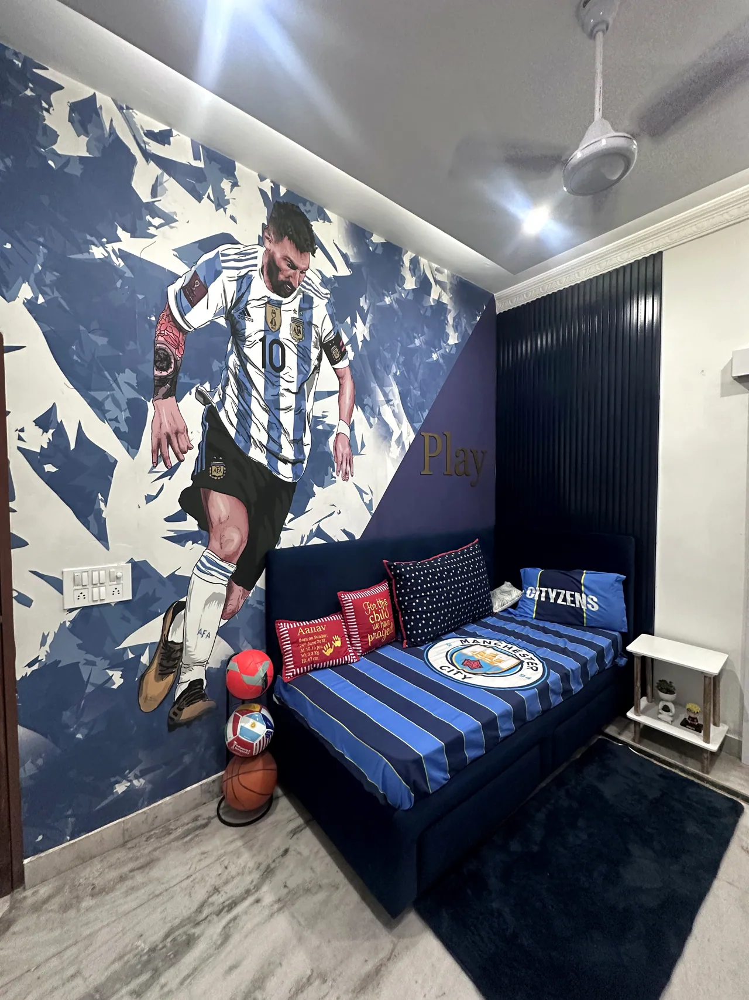
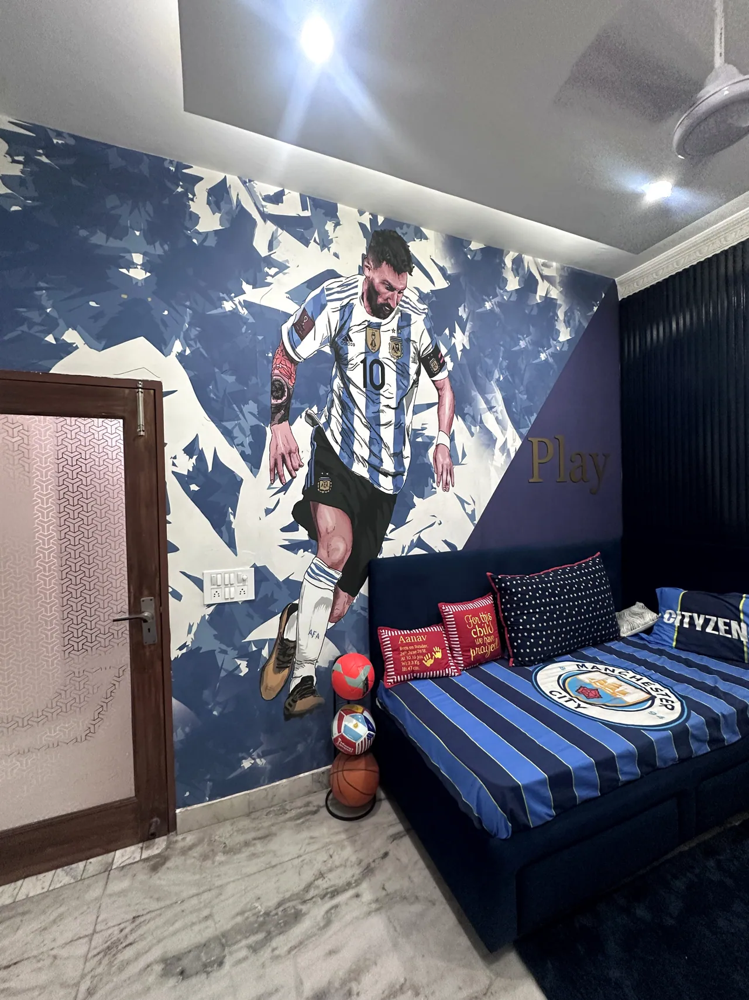
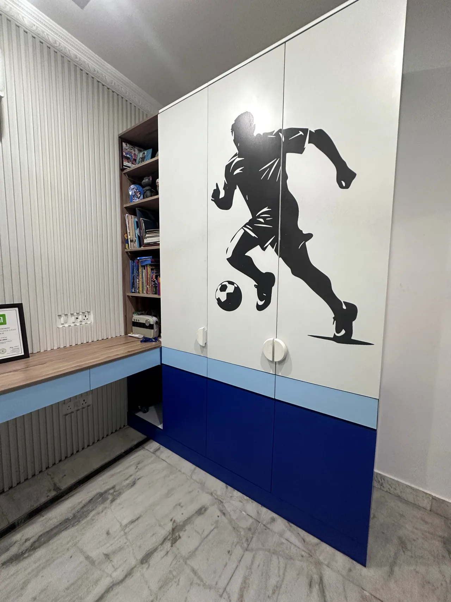
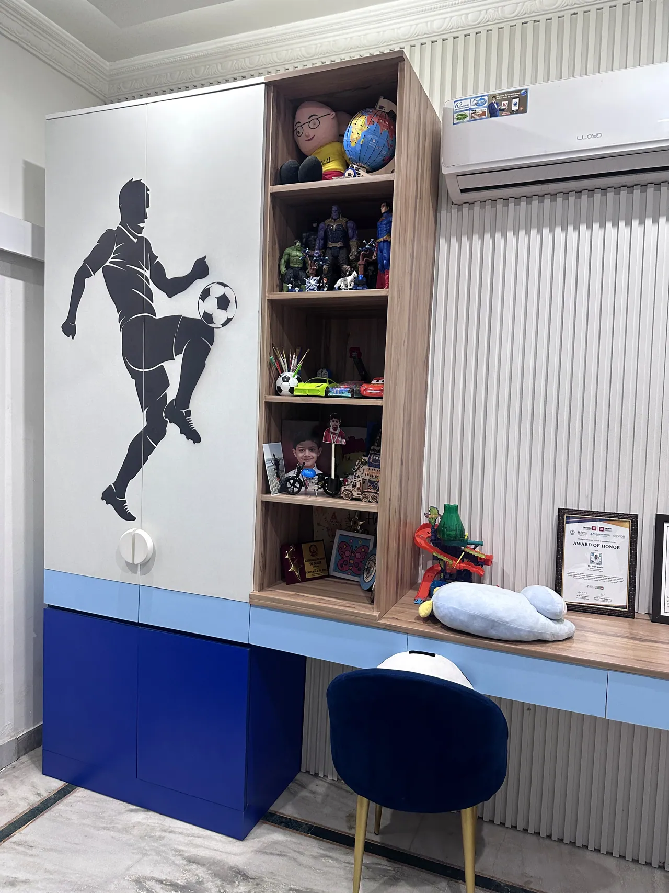
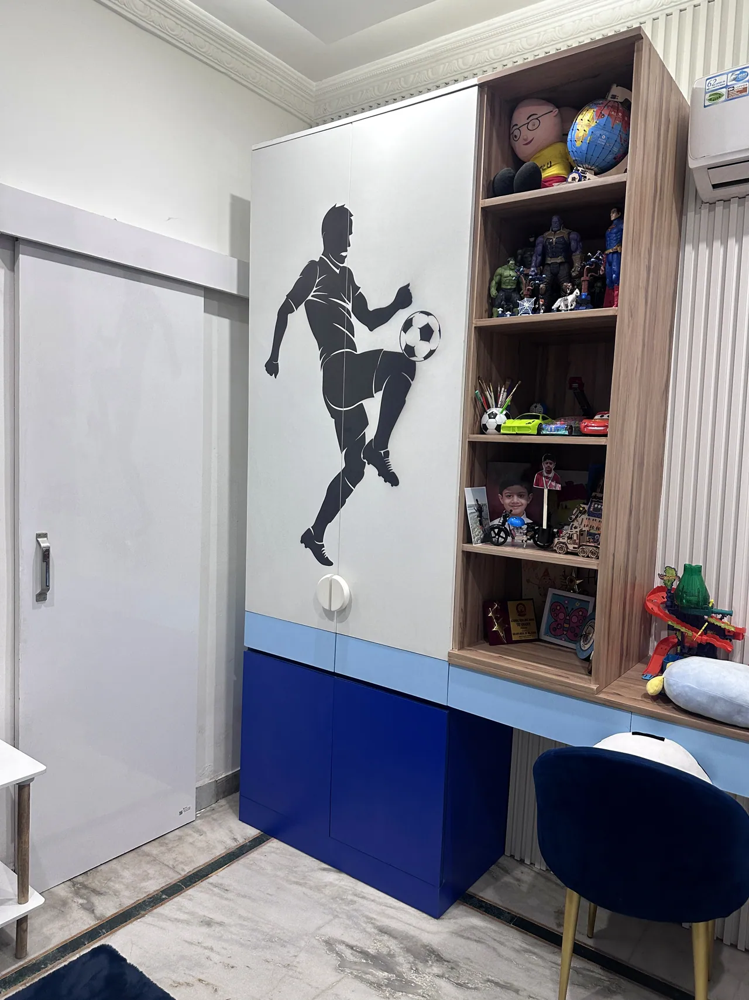
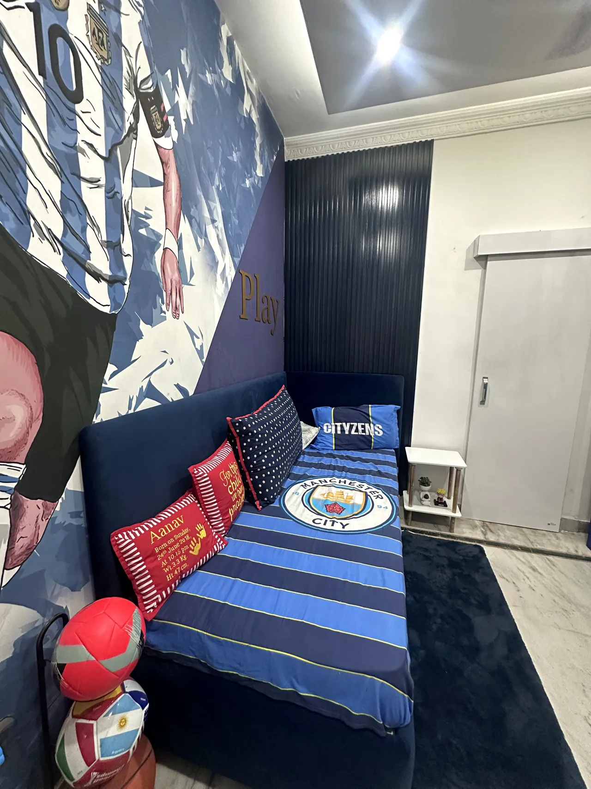
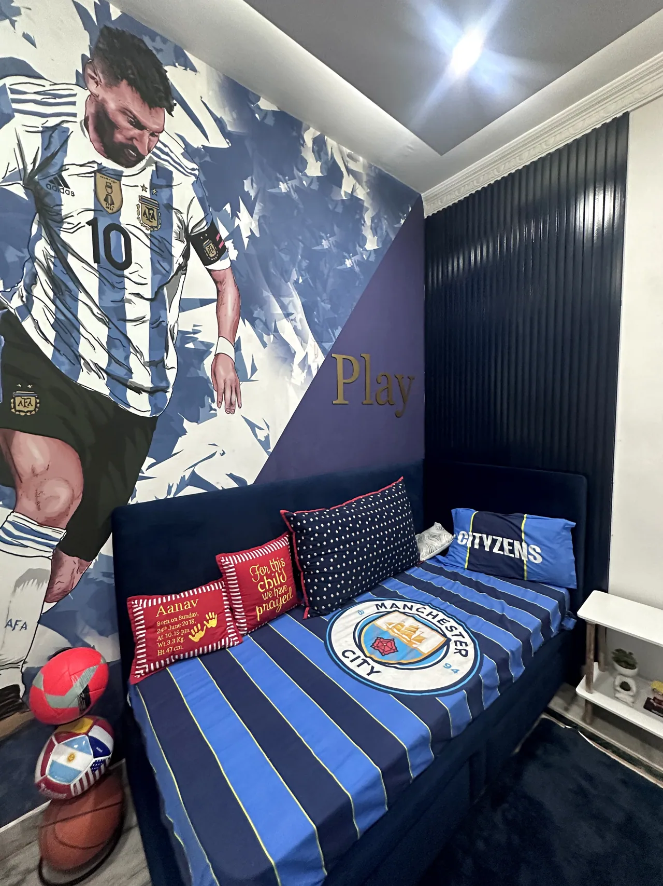
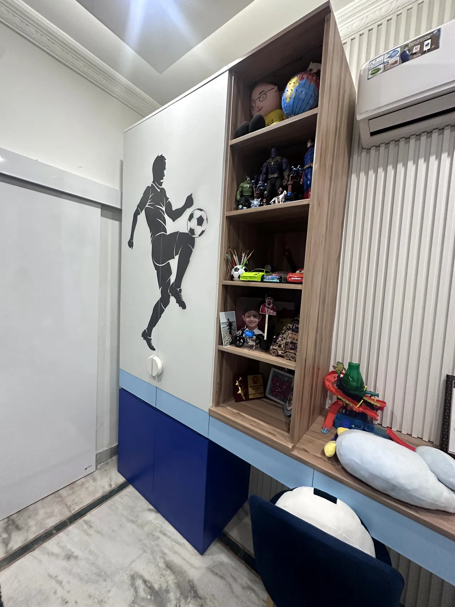
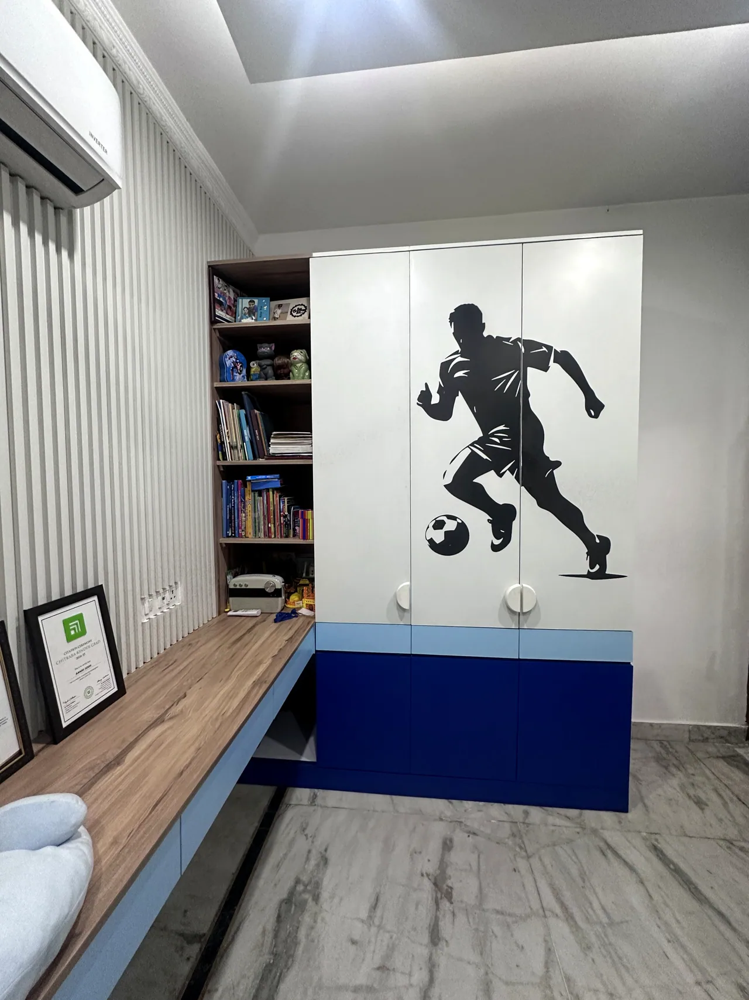
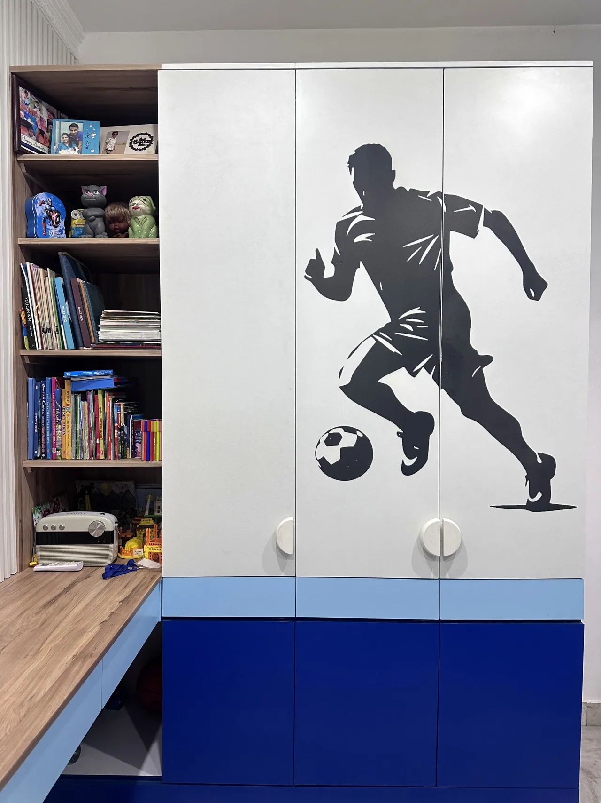

Residential / Kids’ bedroom · DMS Studio Mohali
Evaan Joshi’s Football-Themed Bedroom
A young football fan’s room, shaped around the game he loves.

The project
A closer look.
- Project location
- Not listed
- Category
- Residential
- Studio
- DMS Studio · Mohali
A child’s bedroom designed around his love of football. A bold football mural, deep blue accents, themed bedding and a coordinated study and storage zone bring play, rest and everyday routines together.
Design concept
The football theme carries through the room without losing its everyday purpose: a feature wall gives the bed a strong focal point, while a footballer graphic, blue-and-white palette and organised display shelving keep the child’s interests in view. A dedicated desk supports study alongside play and rest.
Scope
Kids’ bedroom interior design · Football theme development · Bed and feature-wall planning · Study desk and storage coordination
Materials & finishes +
The supplied project photographs show blue-and-white finishes, a football mural and player graphics, themed bedding, integrated desk and shelving, and tiled flooring. Exact product names and finish specifications were not provided.
DMS Studio is based in Mohali and serves Chandigarh, Panchkula, Zirakpur, Kharar and New Chandigarh. The project location was not provided.
Project videos / Original clips
Walk through the space.
2 original project clips. Select play to load a video.









Project details
Good to know.
What is the theme of Evaan Joshi’s bedroom?
The child’s bedroom follows a football theme, with a football mural, player graphic, blue-and-white palette, themed bedding, study desk and storage.
Where is the bedroom located?
The exact property location was not supplied for publication. DMS Studio is based in Mohali and serves the Tricity.
How does the room support study as well as play?
The documented layout pairs football-themed details with a dedicated desk, shelving and storage, keeping everyday study and organisation in the room.